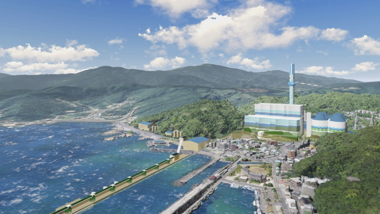

思索深澳／燃煤問題解決之道 竟是重啟核電？
記者林仕祥／台北報導 2018/03/20 06:00

台電深澳電廠的環評案在一片爭議聲中通過，引發雙北民眾對於汙染加劇的恐慌，空氣汙染成為外界高度質疑的問題。（圖／台電提供）
深澳電廠環差案過關，引起外界關注，環團19日表示，我國 2025 年基本上不會缺電，深澳燃煤電廠擴建後，也要到 2025 年才能發電，看不出必要性。不過台電人士指出，若工程順利當然不會缺電，但這其中變數很大，若沒有如期達標，仍難逃缺電夢魘，認為解決缺電危機，最佳的解答是重啟核電。
綠色公民行動聯盟副祕書長洪申翰表示，深澳燃煤電廠擴建後，到 2025 年以後才會開始供電，不過從台電的電源開發計畫來看，2025 年基本上不會缺電，因此沒有什麼必要性，再來，雖然深澳燃煤電廠採用超超臨界機組，但整個空汙排放量，問題還是滿大的。權衡之下，如果台灣要面對 2025 年以後電力系統的挑戰，深澳電廠並不是最佳的解答，尤其深澳燃煤電廠非常花錢，預算 1000 多億元。
洪申翰強調，從台電公開的電源開發計畫來看，2025 年以後，備用容量都在 15% 以上，備用容量 15% 就是供電穩定的重要指標，「台電如果現在還在說 2025 會缺電，是非常糟糕的事情，真得了解電力系統規畫的，都了解我們 2025 備用容量是非常足夠的。」
洪申翰指出，政府目標 2025 再生能源發電達 20%「並非絕對達不到的目標」，但確實是一個非常需要全力衝刺的挑戰。而擴建深澳燃煤電廠到底會不會造成嚴重的空汙，「不是台電自己說的算」，可能用的煤，比過去燃煤電廠汙染少一些，但仍會造成汙染，這是很簡單的邏輯，「也許比以前汙染少一點，但還是會造成影響。」
洪申翰表示，大家也都了解燃煤電廠的狀況，他並不是絕對反對蓋燃煤電廠，但要蓋，首先要有強烈的必要性，且扮演的功能是其他做法「完全無法取代」才行，但現在的深澳燃煤電廠根本沒達到這種狀況。
不過有台電內部人士表示，如果一切工程順利，那台灣 2025 年當然不會缺電，不過這期間的變數很大，只要瓦斯天然氣的接受站、電廠擴建等工程碰到抗爭，讓工程目標無法如期達標，台灣仍難逃缺電夢魘。台電人士強調，要解決台灣缺電危機，最佳的解答就是重啟核電，畢竟核能沒有碳排放或空汙的問題，況且又是早已蓋好的東西，可省下政府一筆不小的經費。不過政府希望 2025 年非核家園，因此解決缺電的方式只有燒煤或天然氣。如果煤炭因為空汙問題不能使用，就只剩下天然氣一途。至於政府 2025 年希望再生能源發電量達20%，該人士坦言「有很大的難度」。
此外，台電人士也指出，燃煤電廠並非主要汙染源，台灣空汙有三分之一來自境外，三分之二來自境內，這其中又以汽機車排放、工業汙染最多，燃煤電廠製造的汙染不到境內汙染的 10%。況且，深澳燃煤電廠使用的是超超臨界機組，較現行機組減少 75% 的空汙，並沒有外界想像的嚴重。